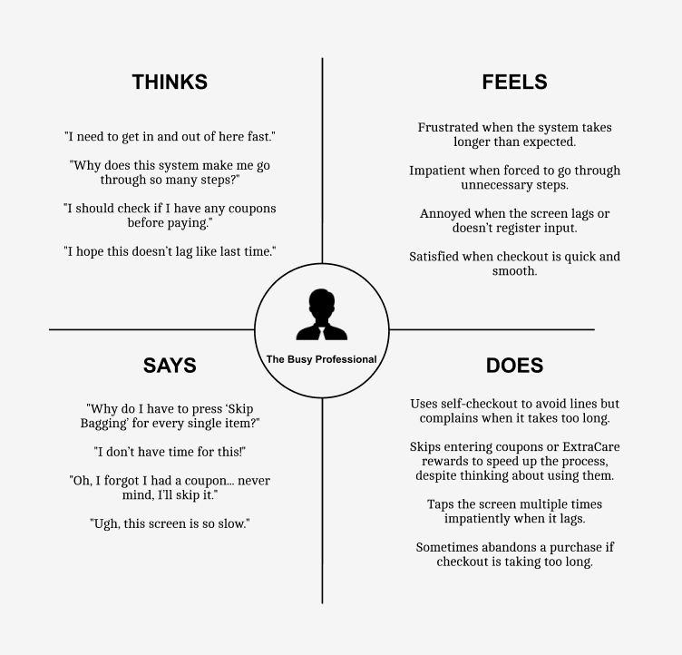

The public interface I selected is the CVS self-checkout system. I chose this interface because it is widely used and familiar to many people, making it a relatable and relevant example. The system includes several key components: a display showing purchased items, an indicator that recording is in progress, and various interactive buttons such as "Enter Your Phone Number," "Skip Bagging," "Use My Own Bag," "Request Help," and an "Español" language option.
A crucial part of the interface is the scanner, which enables items to appear on the screen upon scanning. This system is designed to allow users to check out at their own pace, providing a more convenient and efficient alternative to traditional cashier-assisted checkout. By handling the process independently, users can often complete their transactions more quickly and with greater ease.
For this assignment, I observed and interviewed three users as they interacted with the CVS self-checkout system. Each user approached the kiosk and began by entering their phone number associated with their CVS account. Despite using the same system, their experiences varied based on the number of items they were purchasing and how they navigated the interface.
One notable pattern was that users checking out a single item had a significantly smoother experience compared to those purchasing multiple items. The latter group encountered more friction due to the need to repeatedly press "Skip Bagging" after scanning each item. This was a common frustration that I hadn’t fully noticed before, but observing multiple users highlighted how tedious it can be.
The overall checkout process involved numerous steps: entering an ExtraCare card number, scanning items, selecting “Skip Bagging” for each item, clicking “Finish and Pay,” deciding whether to scan a coupon or proceed, responding to a donation prompt, selecting a payment method, and finally choosing whether to print a receipt. Watching others go through this sequence made me realize just how many steps are required to complete a transaction.
Many respondents found the self-checkout easy to use, largely due to their familiarity with the interface from repeated use. However, a recurring complaint was the inconvenience of having to manually press "Skip Bagging" for each item, which disrupted the checkout flow and made the experience feel less seamless. This issue was something I personally observed and was echoed by multiple users. One person even mentioned that when they first encountered this problem, they had to ask an employee for assistance. Additionally, some users noted that the interface occasionally felt slow and unresponsive, with noticeable lag that hindered efficiency. As a potential improvement, one user suggested linking the phone number entered at the start of checkout directly to the ExtraCare card, eliminating the need to manually input it each time. These insights highlight key areas where the system could be optimized to create a smoother and more user-friendly experience.
Based on observations, I created two personas representing common user experiences.
The storyboard depicts the user journey of one of "The Busy Professional", showing the end-to-end experience.